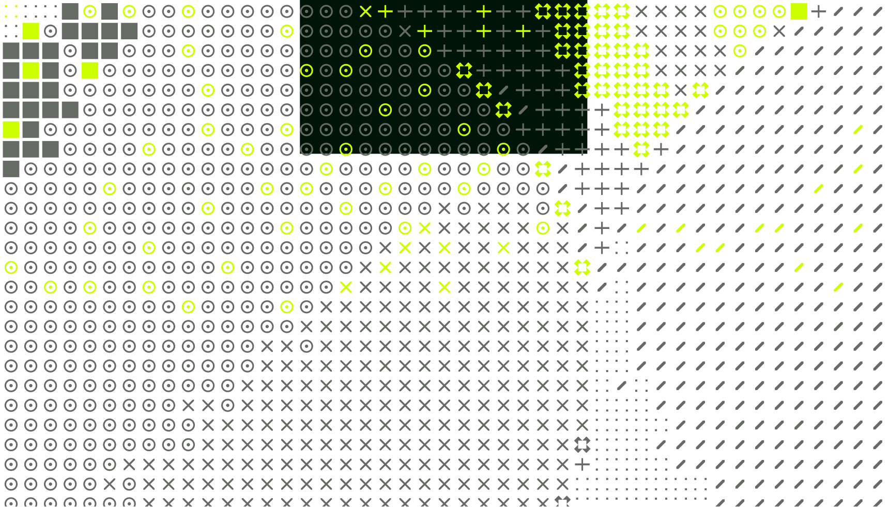
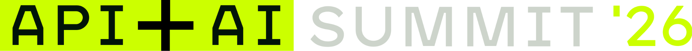
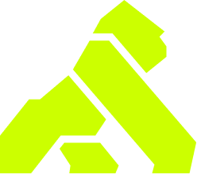
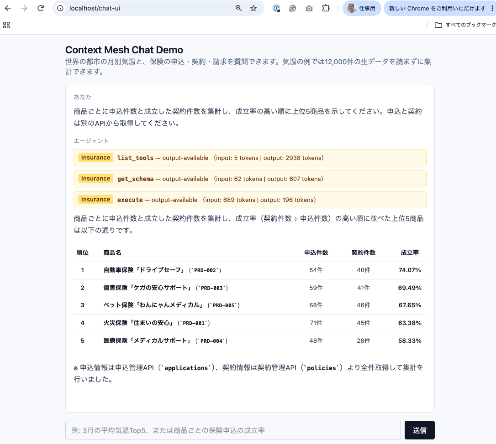

AIエージェントと
Connectivity
Japan
Ned Shawa / Shinichi Hashitani
Kong · 2026.11.19

DRAFT 02
Ned Shawa
肩書・紹介文は後続反映
Shinichi Hashitani
肩書・紹介文は後続反映
AI CONNECTIVITY
アクセス制御
観測
コスト管理
AIエージェント判断し、次の処理を進める指示とルールを送る
処理結果を受け取る
OpenAILLM推論・生成LLM
ClaudeLLM
GeminiLLM
ローカルモデルLLM
API業務データと操作
MCPToolとコンテキスト
他のAIエージェントAgent同士の通信
1 : N
指示・ルール処理結果
01
LLM Connectivity
安全に使い、コストを理解する。
LLM CONNECTIVITY
モデルを選び、通信を守る。
Source: Kong AI PII Sanitizer · AI Gateway
AI COST MANAGEMENT
費用の総額から、使い道の理解へ。
01 / OBSERVE
誰が使ったか
チーム・アプリケーション・
エージェントに結びつける。
02 / PLAN
予算内か
利用の実績を、
業務の予算と照らし合わせる。
03 / ACT
次に何を変えるか
増加の理由を理解し、
運用の判断につなげる。
DEMO 01Konnect Cost Managementの画面へ
Source: Kong AI Cost Management
AFTER THE DEMO / AI COST MANAGEMENT
コストに、業務の軸を与える。
モデル別の消費から
組織の使い道へ。
チーム・アプリ・エージェントなど、判断に使う単位へ費用を結びつける。
同じ業務の軸で予算と実績を見て、制御・最適化につなぐ。
価格の計算業務への帰属予算と実績利用の制御最適化
Source: Kong AI Cost Management · 画面は公式紹介の例
02
Context
エージェントが必要な情報に、届くために。
CONTEXT MESH
必要なコンテキストを、使える形で。
01 / CONNECT
散在する接続を
まとめる
複数のAPIやMCP Serverを、
エージェントが使う
共通の入口に。
02 / COMPOSE
データ加工を
コード処理
複数APIの呼び出しと加工を
Code Mode MCPで
集約処理。
03 / RETURN
必要な結果を
返す
中間データの往復を抑え、
エージェントに渡す
コンテキストを整える。
DEMO 02Chat UIで保険の申込・契約・請求を扱う
Source: Kong Context Mesh Docs
AFTER THE DEMO / INSURANCE
別々のAPIから、ひとつの業務回答へ。
デモの質問 I-1
商品ごとの申込・契約を集計し、
成立率の高い順に上位5商品を。
申込＋契約＋商品
商品IDでまとめ、
契約件数 ÷ 申込件数を計算。
74.07%
自動車保険：40契約 / 54申込
提供キャプチャの実行例。
架空の保険データによるデモ。

利用者提供の実行キャプチャ · 画像を開くと拡大Source: TEST_INSURANCE / I-1 · 本番実演の結果を固定するものではありません
AFTER THE DEMO / CONTEXT MESH
探す。コードで処理する。結果を渡す。
1 探索2 コード生成3 API呼出し4 集約・加工5 結果返却
保険デモI-1の処理を簡略化。探索方法・execute回数は実行ごとに変わり得る。
CONTEXT MESH / HOW IT WORKS
管理から実行まで。何が、どこで動く？
1 Konnect2 Operator3 Sandbox4 APIs5 Result
Source: Kong Context Mesh get started · 管理経路と実行経路を簡略化
CONTEXT / TAKEAWAY
コンテキストは、量より設計。
何にアクセスできるか？
どこで処理するか？
何をエージェントへ返すか？
03
AI Connectivityのこれから
個々の接続から、組織の基盤へ。
THE AI CONNECTIVITY COMPANY
AIエコシステムを、面で支える。
AGENT ↔ LLM
推論・生成への接続
モデルを利用する際の
ガードレールと
コスト管理。
AGENT ↔ AGENT
協調するための接続
複数のエージェントが
連携する世界も、
全体像に含める。
AGENT ↔ API
コンテキストへの接続
必要な情報を探し、
処理し、使える形で
エージェントへ届ける。
接続先が増えても、制御と運用を個々の実装に閉じ込めない。
AI AGENTS × CONNECTIVITY
点の導入から、面でのスケールへ。
いまのAIエージェントに、
足りない接続は何ですか。
モデル。エージェント。APIとコンテキスト。
その全体を、AI Connectivityとして考える。